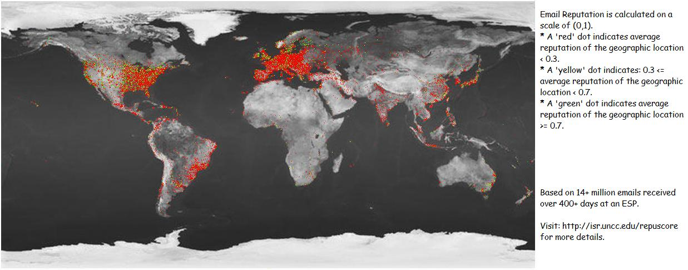

Prior work
Academic research, invited talks, teaching, and professional service, 2003–2016, principally at the University of North Carolina at Charlotte and USENIX LISA.
Selected artifacts
Email reputation, 2007 to 2009
Doctoral work on collaborative sender reputation for email infrastructure (RepuScore), including a campus-magazine feature while the research was underway.

RepuScore
Geographic view of sender reputation from 14+ million messages. Presented at USENIX LISA 2007; dissertation completed in 2009.
UNC Charlotte Alumni Magazine
Feature on internet-safety research at the College of Computing and Informatics. Read the article (PDF).
Vision and voice, 2016
A weekend convolutional-network experiment that combined a camera with spoken commands to label fruit. One clip is a correct identification; the other is the same pipeline failing in the wild.
Correct classification
Voice plus vision: the model identifies an apple as an apple.
Miss: orange as apricots
Same setup, wrong label. A useful reminder that visual classifiers are brittle outside the training distribution.
Research
Postdoctoral: botnet analysis (Conficker, Waledac) and top-level domain registration.
Doctoral: email reputation (RepuScore), sender identity (Privilege Messaging), mobile authorization (Concord), virtualization authorization, and optimistic replication (Summary Hash History, VSync).
Masters: testbed for evaluating intrusion detection systems. Bachelors: signature analysis with neural networks.
Conference talks
- Tracking Email Reputation for Authenticated Sender Identities, CEAS 2008.
- Concord: A Secure Mobile Data Authorization Framework for Regulatory Compliance, USENIX LISA 2008.
- RepuScore: Collaborative Reputation Management Framework for Email Infrastructure, USENIX LISA 2007.
- Experiences using Virtualization to Teach System Administration, System Administration Education Workshop, USENIX LISA 2007.
- Trends and Challenges in Domain based Email Authentications, BoF, USENIX LISA 2006.
- A Testbed for Quantitative Assessment of Intrusion Detection Systems using Fuzzy Logic, IEEE IWIA 2004.
Guest lectures
- Distributed Computing: Hadoop and NoSQL, KOCSEA; guest lecture at USF, 2011. Slides
- Sender identity, RepuScore, and P-Messaging guest lectures, UNC Charlotte, 2006–2008.
- Software design, OOP, agile, and intrusion detection guest lectures, UNC Charlotte, 2004–2005.
Teaching
Lab and curriculum design for ITIS 3100 (Introduction to IT Infrastructure Systems), including NSF-supported cyber-game material; nominated for the outstanding TA award. Presented virtualization-for-teaching at USENIX LISA 2007.
- Undergraduate: ITIS 3100, 3200, 3320, 4166.
- Graduate: ITIS 5166, ITIS/ITCS 6112/8112, ITIS 6167, ITIS 6200/8200.
Experiences using Virtualization to Teach System Administration, USENIX LISA 2007.
Service
- Program committee, International Conference on Operations Research and Enterprise Systems, 2017.
- Program committee and WIP/posters coordinator, USENIX LISA 2009; WIP/posters coordinator, LISA 2008.
- USENIX LISA volunteer and ;login: summarizer, 2006–2008; CEAS 2008 volunteer; SECCDC 2007 volunteer.
- USENIX student stipends for WORLDS 2005, FAST 2005, LISA 2006–2008.